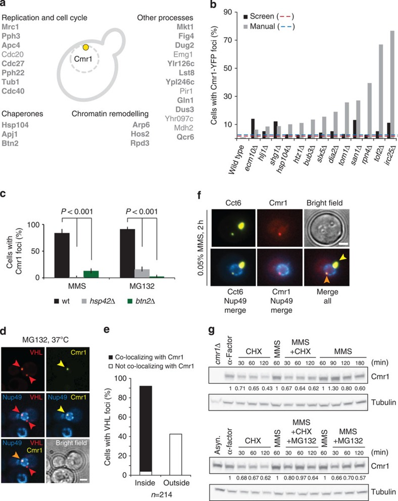

intranuclear quality control compartment
A stress-induced membraneless nuclear inclusion characterized in budding yeast that concentrates misfolded and other conditionally recruited proteins near the nuclear envelope, distinct from the cytoplasmic juxtanuclear quality control compartment. [DOI:10.1038/ncomms7533]

NCBITaxon:4932) · Irene Gallina, Camilla Colding, Peter Henriksen, Petra Beli, Kyosuke Nakamura, Judith Offman, David P. Mathiasen, Sonia Silva, Eva Hoffmann, Anja Groth, et al.; CC BY, via PubMed Central · CC_BY_4_0 · source: PMC PMC4389229.1 f3 · DOI:10.1038/ncomms7533Synonyms: INQ
Part of: GO:0005634
Components
| Component | Type | Part of / acts on | Grounding | Genes | Stoichiometry | Essential | Role |
|---|---|---|---|---|---|---|---|
| heterogeneous INQ protein cargo | OTHER | part of | REVIEWED_LABEL_ONLY | UNKNOWN | Sequestered protein material; includes misfolded reporters and stress-recruited endogenous proteins. Recruitment does not prove that every endogenous client is misfolded.
| ||
| Btn2-type aggregase | PROTEIN | part of | REVIEWED_LABEL_ONLY | BTN2 | CONDITIONAL | INQ-enriched aggregase supporting nuclear protein deposition in tested yeast assays. Nuclear-targeted Hsp42 can experimentally substitute, so native requirements are not universal essentiality.
| |
| Hsp104-type disaggregase | PROTEIN | acts on | REVIEWED_LABEL_ONLY | HSP104 | UNKNOWN | Chaperone recruited to nuclear deposits; Hsp104 inhibition stabilizes reporter INQ during recovery in the tested assay. Recruitment is not an invariant stoichiometric coat.
| |
| WD repeat-containing DNA damage-binding protein | PROTEIN | part of | InterPro:IPR050853 | CMR1 | DISPENSABLE | Conditionally recruited family member exemplified by Cmr1 in yeast INQ. Cmr1 is a stable resident marker in the genotoxic-stress assays, not proven misfolded cargo or an invariant assembly scaffold; Mrc1 foci still form without Cmr1.
|
Organism-specific protein examples
Named proteins in which each component's role was established, with the organism the evidence comes from. The component above is the taxon-agnostic family; these are the specific entries behind it.
Btn2-type aggregase
| Accession | Protein | Gene | Organism | Entry |
|---|---|---|---|---|
UniProtKB:P53286 | Protein BTN2 | BTN2 | Saccharomyces cerevisiae S288C (NCBITaxon:559292) | REVIEWED |
Role and evidence (2 references)Reviewed reference-sequence example; not a reassignment of the paper's experimental strain background.
| ||||
Hsp104-type disaggregase
| Accession | Protein | Gene | Organism | Entry |
|---|---|---|---|---|
UniProtKB:P31539 | Heat shock protein 104 | HSP104 | Saccharomyces cerevisiae S288C (NCBITaxon:559292) | REVIEWED |
Role and evidence (2 references)Reviewed reference-sequence example; not a reassignment of the paper's experimental strain background.
| ||||
WD repeat-containing DNA damage-binding protein
| Accession | Protein | Gene | Organism | Entry |
|---|---|---|---|---|
UniProtKB:Q12510 | DNA damage-binding protein CMR1 | CMR1 | Saccharomyces cerevisiae S288C (NCBITaxon:559292) | REVIEWED |
Role and evidence (2 references)Reviewed reference-sequence example; not a reassignment of the paper's experimental strain background.
| ||||
Canonical examples
NCBITaxon:4932Saccharomyces cerevisiae — INQ characterized by nuclear-envelope markers, stress perturbations and fluorescent protein localization. Methods use RAD5 W303 derivatives by default, with S288C libraries and exceptions; unread supplemental strain tables preclude finer reassignment of each assay. [DOI:10.1038/ncomms7533]NCBITaxon:559292Saccharomyces cerevisiae S288C — Reference-sequence taxon for the reviewed Btn2 accession, not an assertion that every image or deletion assay used S288C. The other protein examples have their own accession evidence. [UniProtKB:P53286]
Functions
- spatial sequestration of nuclear protein cargo — Concentrates selected misfolded and stress-recruited proteins in a nuclear deposit. INQ formation is not obligatory for degradation of every reporter and does not establish universal stress protection.
DOI:10.15252/embj.201489524Figures 1-3 establish nuclear deposition; Figure 6C finds similar reporter degradation during recovery when BTN2/HSP42-dependent deposition is impaired.DOI:10.1038/ncomms7533Figure 3 and Discussion show stress-dependent recruitment beyond misfolded reporters.
- conditional routing of nuclear quality-control cargo to the vacuole — Nuclear reporter deposits can undergo nuclear-vacuolar-junction- and Vps4-dependent vacuolar delivery alongside proteasomal clearance. This is a demonstrated route in the tested reporter conditions, not the fate of all INQ clients.
DOI:10.1038/s41556-023-01128-6Figures 5-8 combine contact-site and ESCRT perturbations, Keima acidification, protease inhibition and live imaging. Exact membrane-budding steps remain a model.
Mechanism graphs
Stress- and cargo-dependent INQ deposition (ASSEMBLY)
Bounded interventions distinguish nuclear deposition from stress-specific recruitment of a resident marker.
| Subject | Predicate | Object | Evidence |
|---|---|---|---|
| Nuclear-targeted LuciTs misfolding at 37 C | induces | intranuclear quality control compartment |
|
| BTN2 deletion | impairs | intranuclear quality control compartment |
|
| Engineered nuclear-targeted Hsp42 in btn2 deletion cells | restores | intranuclear quality control compartment |
|
| Methyl methanesulfonate treatment | induces | Cmr1-positive INQ foci in genotoxic-stress assays |
|
| BTN2 deletion | reduces | Cmr1-positive INQ foci in genotoxic-stress assays |
|
| HSP42 deletion | reduces | Cmr1-positive INQ foci in genotoxic-stress assays |
|
Conditional INQ positioning and vacuolar disposal (FUNCTION)
Nuclear reporter deposition, spatial convergence and vacuolar clearance are separable readouts.
| Subject | Predicate | Object | Evidence |
|---|---|---|---|
| intranuclear quality control compartment | undergoes | INQ/JUNQ convergence across the nuclear envelope |
|
| intranuclear quality control compartment | can undergo | Vacuolar delivery and clearance of nuclear reporter cargo |
|
| NVJ1 deletion | impairs | Vacuolar delivery and clearance of nuclear reporter cargo |
|
| VAC8 deletion | impairs | Vacuolar delivery and clearance of nuclear reporter cargo |
|
| CHM7 deletion | disrupts | INQ/JUNQ convergence across the nuclear envelope |
|
| VPS4 deletion | impairs | Vacuolar delivery and clearance of nuclear reporter cargo |
|
Discussions
- INTERPRETATION (RESOLVED): Keep INQ distinct from JUNQ, IPOD and nuclear stress granules. Early papers use different JUNQ/INQ interpretations; shared perinuclear proximity is not exact identity.
- CURATION_TODO (OPEN): Resolve exact source-neutral grounding for Btn2-type, Hsp104-type and heterogeneous cargo classes. Domain-only and broader family hits cannot serve as exact identities for narrower component classes.
- INTERPRETATION (RESOLVED): Separate directly localized proteins from regulators, reporters and partially colocalizing complexes. Genetic dependence, fluorescence overlap and biochemical interaction do not establish fixed composition or universal assembly requirements.
- INTERPRETATION (RESOLVED): Do not equate INQ deposition with obligatory degradation or a universal genome-protection mechanism. Different substrates and perturbations give different turnover effects; deposition, refolding, degradation and adaptation are distinct claims.
- CURATION_TODO (OPEN): Resolve native client inventories, material state, precise experimental strain mappings and prevalence. Reporter induction and one microbial species do not establish lineage prevalence, universal dimensions or fixed molecular composition.
Evidence
DOI:10.15252/embj.201489524Miller et al. (2015), PMID 25672362, PMC4369314. Read all main Results and Discussion and initial Methods via public PMC. Supplementary strain tables and actual figure pixels were not inspected. Heat-induced INQ also forms without MG132; the older JUNQ redefinition is not adopted as exact synonymy.DOI:10.1038/ncomms7533Gallina et al. (2015), PMID 25817432, PMC4389229.1. Verified native metadata/JATS; read INQ characterization, Mrc1 Results, full Discussion and strain Methods. Figure 3 caption and actual image inspected. Supplements were not independently inspected.DOI:10.1038/s41556-023-01128-6Sontag et al. (2023), PMID 37081164, PMC12349969.1. Verified native metadata/JATS; read all main Results (S1-S8), Discussion, strain-table pointer and Data availability. Actual figures and supplemental strain tables were not inspected. TDM metadata does not establish a Creative Commons hosting licence.GO:0016604Native QuickGO verifies nuclear body as an active cellular-component class for a membraneless organelle in the nucleoplasm; broader parent only.GO:0016234Native QuickGO verifies inclusion body as a discrete intracellular aggregation; broader parent, not exact INQ identity.GO:0005634Native QuickGO verifies nucleus. Nuclear localization in the cited microscopy supports parthood for INQ, not for cytoplasmic JUNQ or post-extrusion cargo.
Curation history
2026-10-05T06:40:32Zcodex · CREATED_RECORD — Scaffolded by scripts/new_record.py2026-10-05T06:42:58Zcodex · EXPANDED_RECORD — Added yeast-scoped INQ identity, conditional resident/machinery classes, two intervention graphs, source-boundary discussions and an inspected CC BY 4.0 primary figure.
Source: data/structures/inclusion/intranuclear_quality_control_compartment.yaml